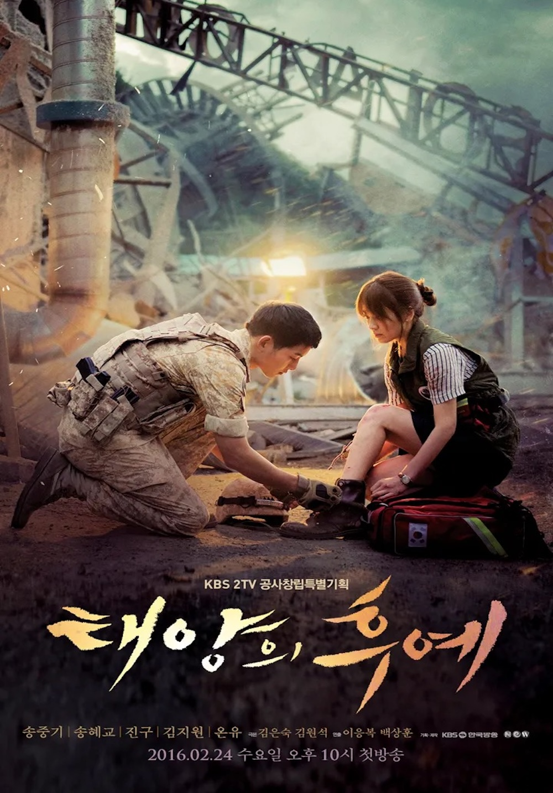
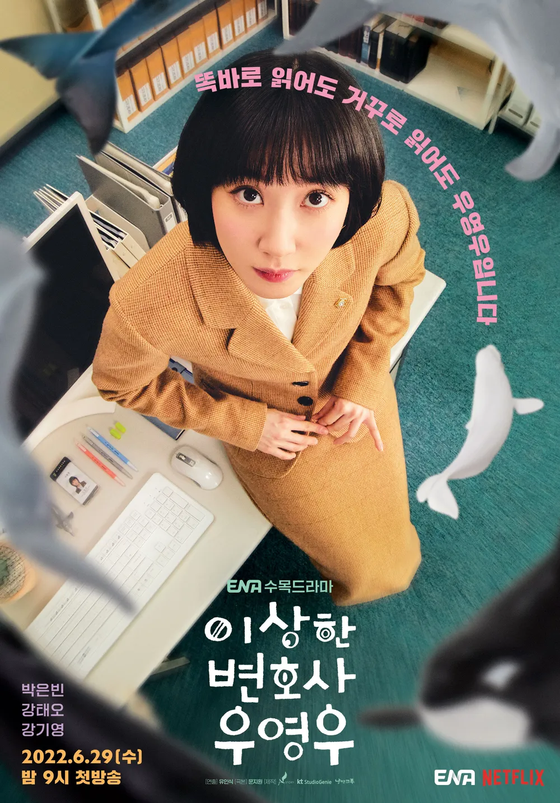
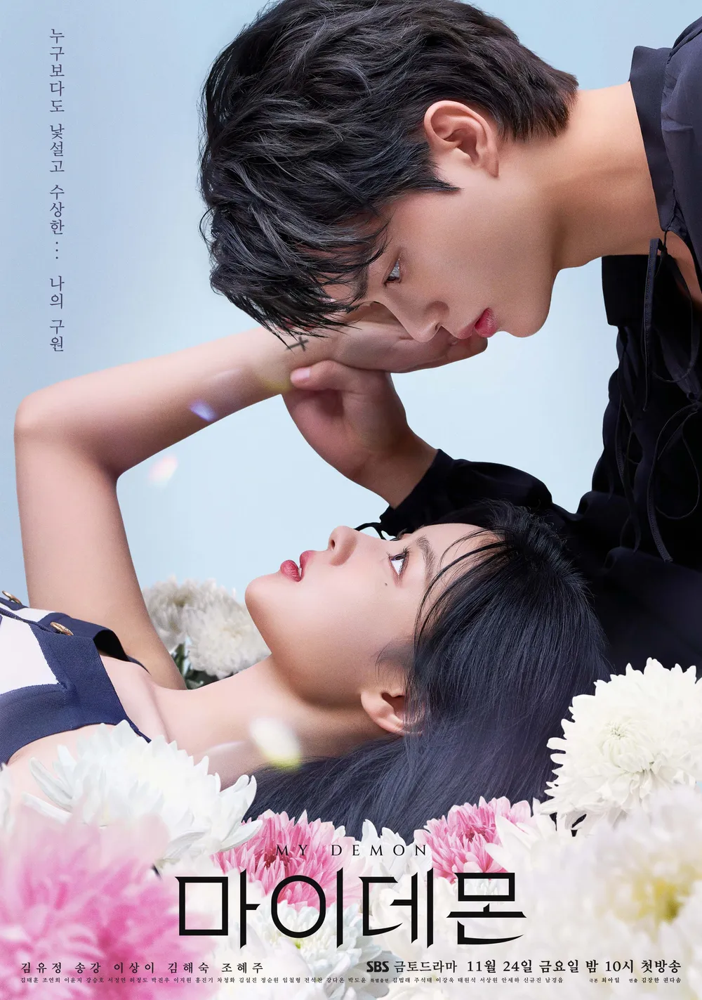
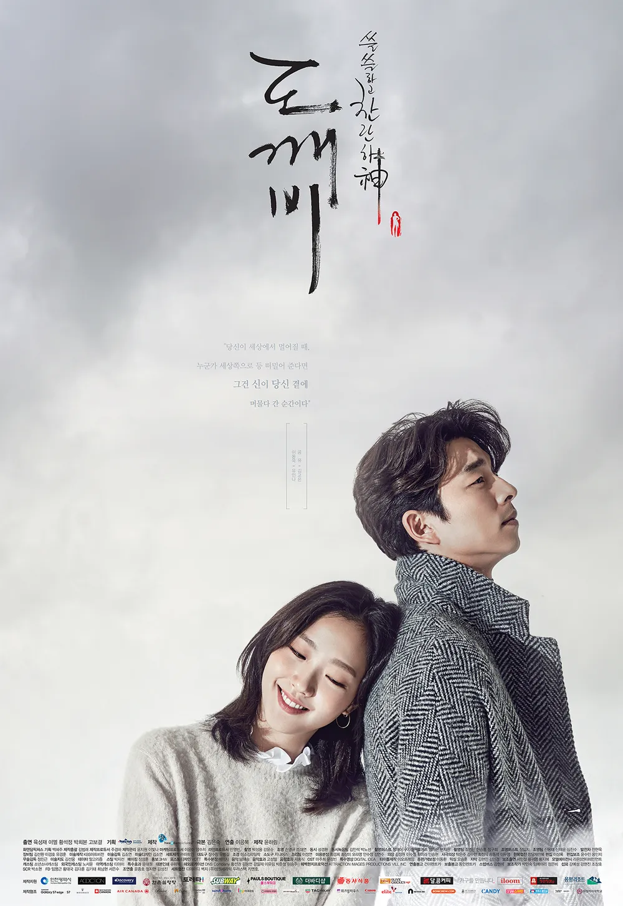
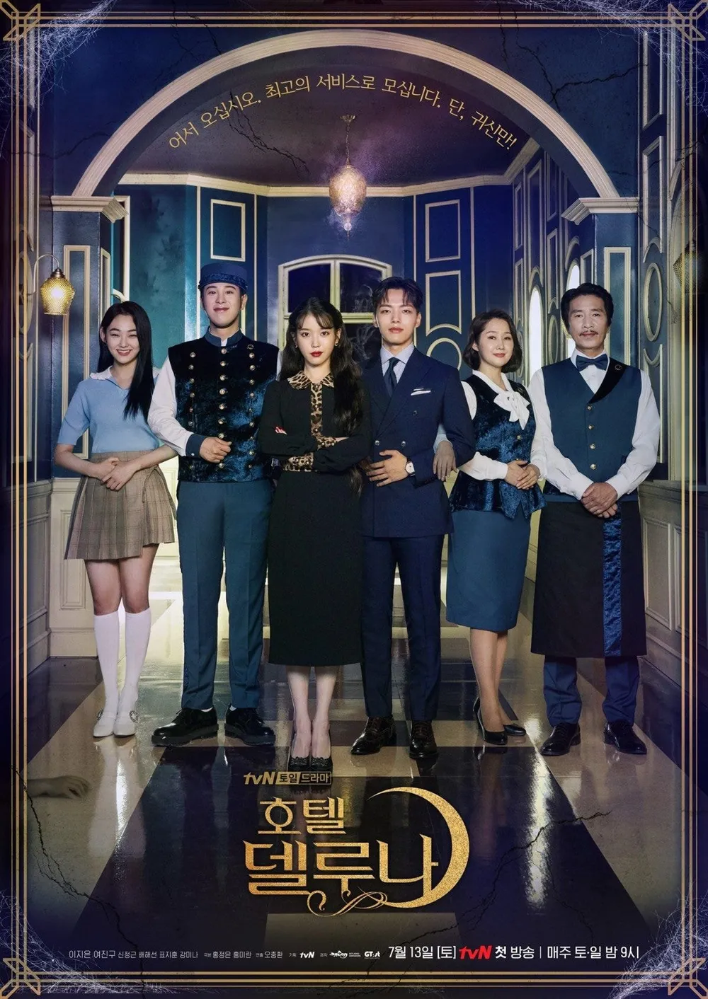
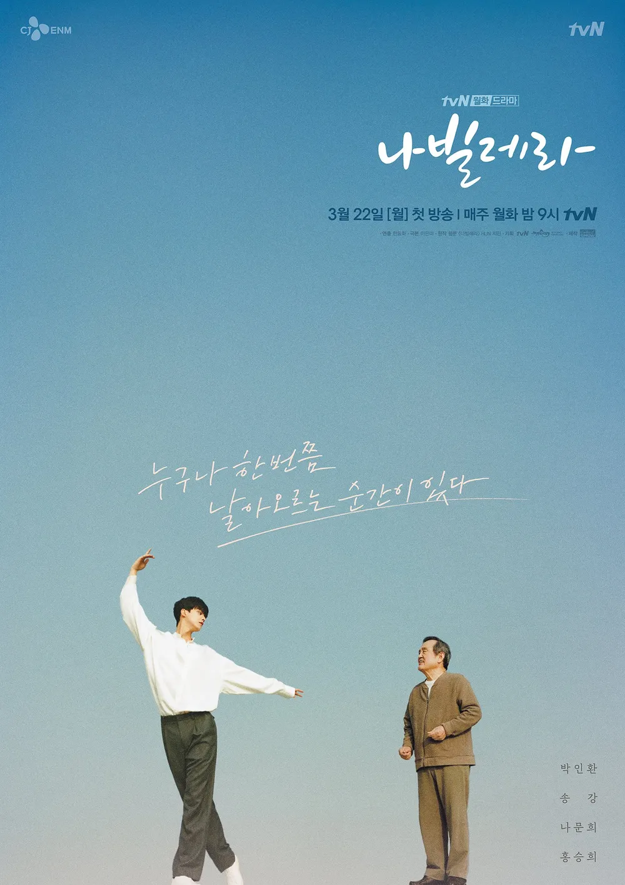
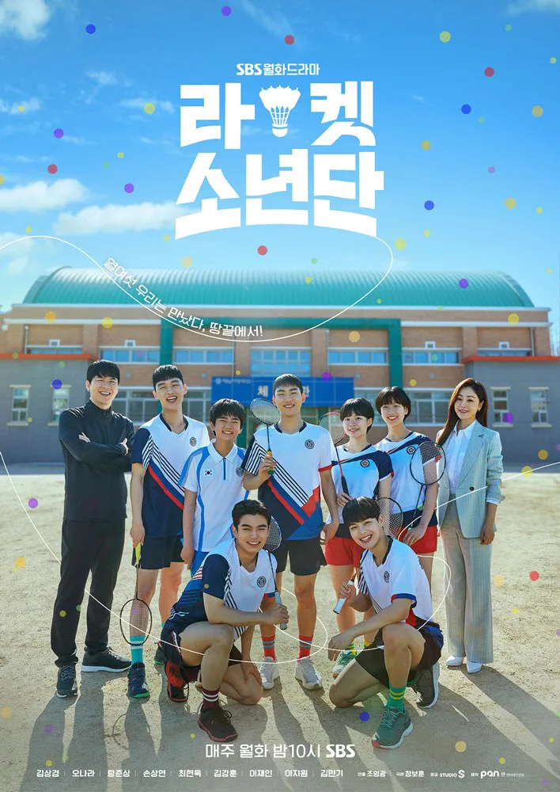

hey, need new shows to watch on Netflix? i got you!!
*disclaimer: ratings are personal opinions*
🎵 - You Are My Everything by Gummy (Descendants of the Sun Original Soundtrack)
Huge Hits

DESCENDANTS OF THE SUNmain actors:
song joongki
song haekyo
kim jiwon
jin goo
plot:
"After a chance meeting in a hospital, an ardent soldier falls for a gifted surgeon. Opposing philosophies tear them apart, but fate has other plans."
rating:
8.9/10
My first k-drama. So many iconic scenes, lines, OSTs. Though there is room for improvement in subtle details, lines, and plot progression, a classic, must-watch.
CRASH LANDING ON YOUmain actors:
hyun bin
son yejin
plot:
"A paragliding mishap drops a South Korean heiress in North Korea -- and into the life of an army officer, who decides he will help her hide."
rating:
8.9/10
I understand that the plot sounds so weird when first read, but once you get into the plot, it moves so fast and is extremely entertaining.

EXTRAORDINARY ATTORNEY WOOmain actors:
kim eunbin
kang teo
kang kiyoung
plot:
"Brilliant attorney Woo Young-woo tackles challenges in the courtroom and beyond as a newbie at a top law firm and a woman on the autism spectrum."
rating:
9.6/10
Amazing acting by the main actress, characters are overall well built, shares interesting stories, overall leaves you with positive feelings.
Fantasy Romance

MY DEMONmain actors:
kim yoojung
song kang
lee sangyi
plot:
"A pitiless demon becomes powerless after getting entangled with an icy heiress, who may hold the key to his lost abilities — and his heart."
rating:
6.5/10
Acting could be better, some cliche details to the plot, but overall not bad light watch without too much seriousness or goriness.

GUARDIAN: THE LONELY AND GREAT GODmain actors:
gong yoo
kim goeun
lee dongwook
yoo inna
yook sungjae
plot:
"In his quest for a bride to break his immortal curse, Dokkaebi, a 939-year-old guardian of souls, meets a grim reaper and a sprightly student with a tragic past."
rating:
7.2/10
Was a huge hit in South KR with iconic scenes and lines, many cute scenes between goblin and grim reaper, but personally could not follow the romance element too well.

HOTEL DEL LUNAmain actors:
iu
yeo jingoo
plot:
"When he's invited to manage a hotel for dead souls, an elite hotelier gets to know the establishment's ancient owner and her strange world."
rating:
7.0/10
Personally was not a huge fan of the plot, but the vibes, colors, costumes, overall aesthetic is incredibly eye-pleasing and well done.
Healing

NAVILLERAmain actors:
park inhwan
song kang
na moonhee
plot:
"A 70-year-old with a dream and a 23-year-old with a gift lift each other out of harsh realities and rise to the challenge of becoming ballerinos."
rating:
9.5/10
Made me cry multiple times! Very sweet, wholesome. The plot is able to move in an interesting direction without forcing too much action or conflict.
HOSPITAL PLAYLISTmain actors:
cho jungseok
kim daemyung
jeon mido
jung kyungho
yoo yeonseok
plot:
"Every day is extraordinary for five doctors and their patients inside a hospital, where birth, death and everything in between coexist."
rating:
8.0/10
First season is significantly better than the second season. The first season is able to really portray the happiness, joy, sadness, anger that happens in life, but the second season feels like it focuses too much just on the main characters.

RACKET BOYSmain actors:
kim sangkyung
oh nara
tang junsang
son sanghyun
choi hyunwook
plot:
"A city kid is brought to the countryside by his father's new coaching gig: reviving a ragtag middle school badminton team on the brink of extinction."
rating:
7.8/10
Very low key drama to watch, actors and the plot are cute and wholesome. A solid coming-of-age story, involving sports.